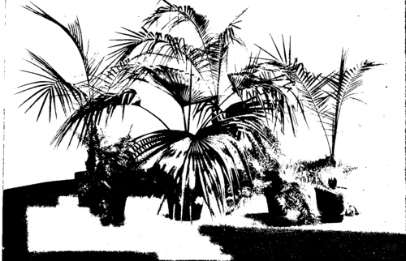

IV. Potting And Repotting
Description
This section is from the book "Indoor Gardening", by Eben E. Rexford. Also available from Amazon: Indoor Gardening.
IV. Potting And Repotting
SAID a woman to me, not long since, "While I'm convinced there's a knack to flower-growing that not all of us can fully attain, I'm convinced there's a special knack to transplanting and repotting plants. I try to be very careful when I do this kind of work, but somehow I generally fail at it. My plants seem to resent my interference with them, no matter how much they require the attention, and for weeks they sulk, and refuse to grow, while those of my neighbor keep right on growing as if nothing had happened to them. And she don't bother with her plants, in potting or repotting them, half as much as I do."
In that last sentence this woman unconsciously explained why she failed and her neighbor succeeded. She "bothered" too much. In other words she was over careful. In plant-growing there are extremes. One is neglect, the other a care that degenerates into fussiness. As many plants die of one as of the other.
The1 fussy gardener pets and coddles her plants precisely as she does her children, and the result is about the same in each case. Instead of giving them a reasonable amount of intelligent care, and trusting them to follow out the instincts of Nature in doing the rest for themselves, she carries out her petting-coddling policy until they have lost that sturdy, self-reliant quality which characterizes all healthy development. This she does out of mistaken ideas of kindness, of course, but the result is often quite as disastrous as that of intentional injury. Plants, just as persons, like to have some responsibilities put upon them, and do not care to be treated as if they were wholly incapable of doing something for themselves.
"But," may be asked, "what do you mean by petting and coddling one's plants ? What is fussiness, from a floricultural standpoint?"
It is made up of many things: Turning a plant out of its pot to examine its roots when it is doing as well as could be expected; applying a little of tins, that, or the other fertilizer when none is needed-experimenting with anything and everything one's friends may make mention of as having special value in bringing about or hastening the' development of plants-using the dregs of tea or coffee as a mulch under conditions that make any kind of mulch an injury rather than a benefit-shifting plants to large pots when the pots they have been growing in are quite large enough for all their needs-applying water at irregular times and in varying quantities. In brief, it is giving a treatment entirely out of harmony with the teachings of Nature, while the very essence of successful plant-culture consists in imitating natural conditions as closely as possible. Give your plants good soil, good light, plenty of water and fresh air, and then let them take care of themselves, to a great degree. They will do it if you give them a chance, but can not do it if you keep fussing over them, and doing things they do not want done.
This digression-of which I hope every reader will make careful note-has led away from the subject that heads the chapter. I set out to give instructions about potting plants, and this I will now attempt to do.
I consider it a very easy matter to pot or repot a plant successfully, if one goes at it in the right way. I do not believe in turning a plant out of its old pot and shaking all the soil from its roots, because no plant likes to have its roots interfered with. I simply slip the plant out of its old pot (this is easily done by inverting the pot and tapping it against something hard and firm while one hand is spread over the soil with the plant between the fingers) and put it into a new one a size or two larger, and fill in about it with fresh soil, which is made firm by crowding it down with the fingers, or a blunt stick, if the fingers are not long enough to reach to the bottom of the pot, or by the application of enough water to thoroughly settle the soil. In this way the roots of the plant are not disturbed in the least. The feeders among them, which will be seen all over the outside of the ball of earth as it comes from the old pot, will be brought into direct contact with the fresh soil, and development will go on without interruption. But if all, or most, of the soil is shaken from the roots, as some writers advise, the plant receives a check from which it will take some time to recover, and a check of any kind is always to be avoided, because it means interrupted development. If a plant turned out of an old pot shows a solid network of roots about the mass of earth containing it, it may be well to set it in a tub of water for a short time, to loosen the interlaced root-fibers, but beyond this I would not go. Too great interference with the roots of plants explains frequent failures in potting and repotting.
Palms And Ferns.
Old plants become root-bound. If they have been in the same pot for a long time, and seem inclined to stand still, or cannot be made to grow vigorously by good care, it is well to examine their roots with a view to finding out the cause of the difficulty. Turn the plant out of its pot, by proceeding as advised on a preceding page. If you find the roots matted thickly on the outside of the soil, and many are brown, and some dead, you may be sure that a larger pot is needed. The plant should be repotted at once. Many fine plants are lost or seriously injured by not attending to them at the proper time. In every instance good drainage should be arranged for before the plants go into their new pots.
If new pots are used, they should always be soaked for at least twelve hours in a tub containing enough water to entirely cover them. If this is not done, the porous material of which the pot is made will absorb water from the soil, as a sponge does, and your plant may be robbed before you suspect it of the moisture it needs. Pots that have been used should be scrubbed thoroughly with soap and water to free them from all germs of disease, before they are again made use of.
The amateur gardener is often at a loss to decide what size of pot to use in repotting old plants. I would not advise pots more than two sizes larger than the old, in any case, and generally one size larger will afford sufficient room for new roots to spread for a year to come. It is a mistake to think that plants in the window require very large pots. Nowadays we feed our plants largely on foods supplied by fertilizers rather than by the use of fresh earth, therefore smaller pots can be used than were formerly supposed to be necessary to the proper development of a plant.
In transplanting seedlings and cuttings care should be taken to disturb the delicate roots as little as possible. Never touch the roots with the fingers if you can avoid it.
Make little holes in the soil into which the plants are to go, drop the roots in, and then gently press the earth about them. If the roots become exposed, crumble fine earth about them and shake it into place among them by jarring the pot sharply with the hand. Then water well, and put the plant in a shady place until it has become fully established and begins to show signs of renewed growth. But do not let your shady place be one from which the air is excluded. Newly potted plants require fresh air nearly as much as they do water.
In potting or repotting plants, never fill the pot with soil. Leave at least an inch between the surface of the latter and the rim of the pot. If a pot is filled to its rim most of the water you apply will run off before the soil has a chance to absorb much of it. But an inch of space above the surface will allow you to apply the water in sufficient quantity to meet the requirements of the plant, and leave you free to go on with the watering of other plants while it is being absorbed.
Great harm is done by putting small plants into large pots, urging as a reason for so doing the fact that large pots will be needed in time, and therefore they might as well be given now, thus saving the labor and trouble of repotting. Small plants cannot make use of the nutriment contained in large quantities of soil, and when we put them in large pots we overfeed them. Their powers of digestibility are not equal to the demand made upon them; consequently a sort of vegetable dyspepsia results which is often fatal, always harmful. It is much better to repot at intervals, as the old pots become filled with roots, than to anticipate the future need of a plant by giving large pots when they are not needed.
I would not advise keeping old plants over from year to year. Rather would I advise growing new ones to take the places of those which have outlived their usefulness, or have outgrown the limits that can conveniently be assigned them. We do not always get the most or finest flowers from old plants, or large ones, as some persons have an idea. Young, strong plants are almost invariably more satisfactory in the window-garden than older ones. By the term young, used in this connection, I have reference to plants in the prime of their development. The only class of plants I would advise retaining after having become large is that grown for foliage and for general decorative purposes.
Some amateurs make a practice of repotting all their plants once a year, generally in fall. This is wrong. Repot only such plants as actually need repotting, and do this, always, when the need is discovered, no matter what the period may be. Late potting is advised against because the plant is likely to be in an unsettled condition at the very time when it ought to be perfectly established and ready to go ahead with preparation for winter's work.
Continue to: